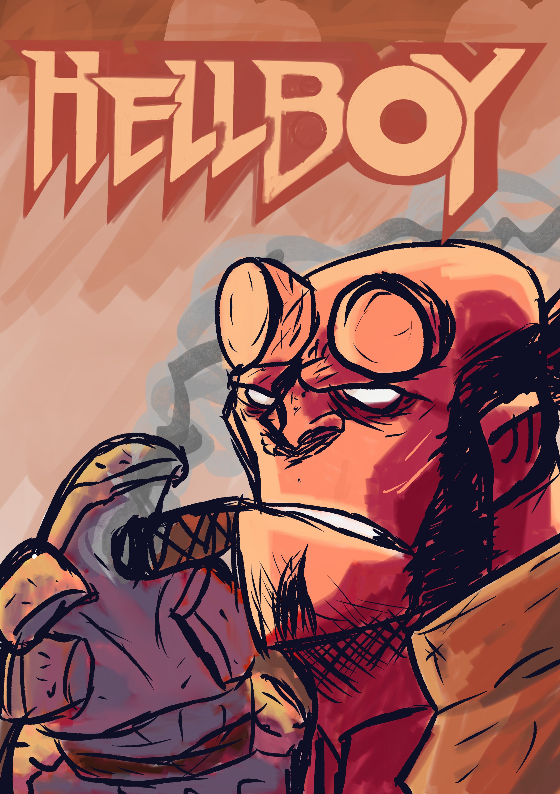
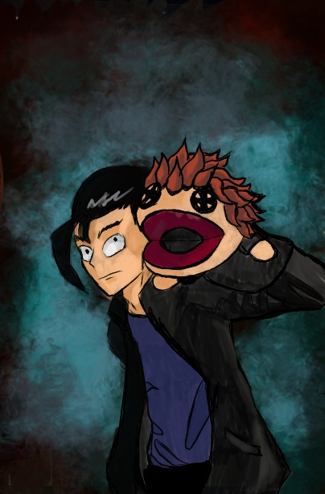
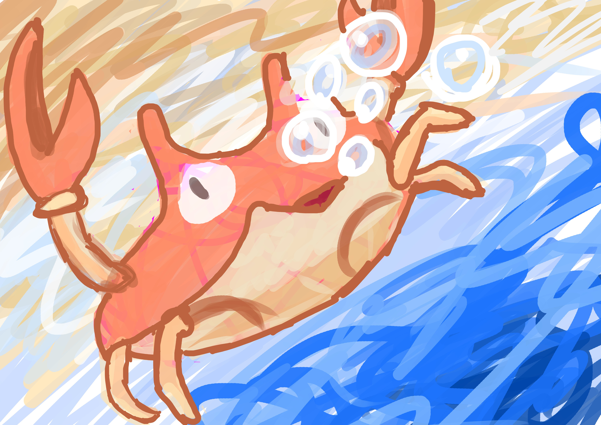
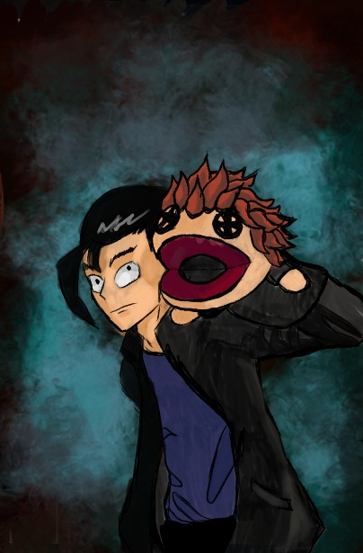
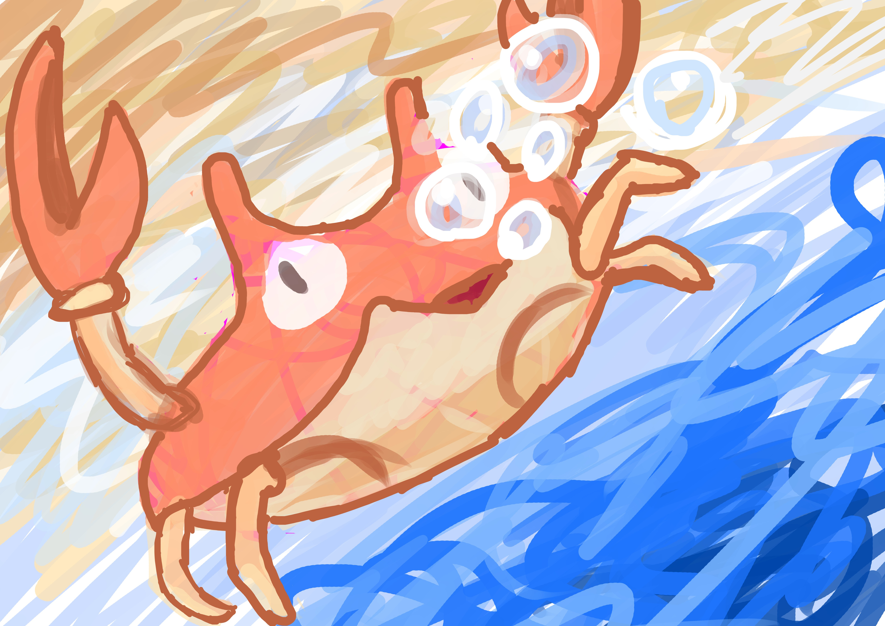

Este soy yo
Publicado el 23 de febrero de 2026
Hola y bienvenidos a mi blog personal, donde mostraré varias cosas que me gustan, además de cosas que he hecho o quiero hacer.
estos son mis gustos
Publicado el 23 de febrero de 2026
Hola y bienvenidos a mi blog personal, donde mostraré varias cosas que me gustan, además de cosas que he hecho o quiero hacer.
Publicado el 23 de febrero de 2026
Me gusta mucho el rock, la música independiente en especial, estos serían unos grupos que me gustan por ejemplo :
Esta es una de las primeras canciones que escuché del género que fue con la que me empezó a gustar:
Publicado el 24 de febrero de 2026
Desde siempre me ha gustado dibujar (no estoy diciendo que sea bueno en eso), de niño e incluso ahora me gustan las caricaturas, dibujos y desde hace poco me dio por querer aprender a animar, por eso me compré una tableta gráfica con la cuál ya puedo hacer dibujos en digital, pero no podía animar, porque si de primera uno no sabe dibujar en digital si es que nunca lo ha hecho, entonces menos va a saber animar, por eso solo me he dedicado a dibujar y todavía no he hecho ninguna animación.
estos son algunos de los dibujos que he hecho en la tableta:
 



Publicado el 24 de febrero de 2026
Me gustan mucho los videojuegos, de niño me gustaban mucho los juegos de LEGO y el minecraft, pero en parte era porque son los unicos juegos que podía jugar en su tiempo, ahora ya tengo más jeugos, me gustan mucho los juegos independientes como los Hades, los Blasphemous, Clastle crashers, Cuphead, etc., aunque por mucho, mi favorito es el Hollow knight, un juego hecho por 3 personas sobre un reino de insectos que se está hundiendo en la perdición y que ya no es ni la sombre que lo que llegó a ser algún día, con una ambientación que te mete en la historia sin decirte ni una sola palabra, el movimiento está muy pulido, dependiendo de que tanto presiones el botón para saltar saltas más o menos distancia, el combate a pesar de ser muy simple está muy bien hecho, los diseños tanto de personajes como de enemigos es hermoso, los escenarios e incluso tiene ciertas curiosidades como por ejemplo, hay un amuleto que hace que hagas daño con un olor a caca y si tienes ese amuleto equipado mientras vas a una tienda de objetos antiguos, el dueño no te vende nada e incluso te pide que te vayas, pero si vas a la tienda de una mantis, esta te hace un descuento en todo lo que compres.
Al ser este uno de mis primeros juegos que jugué que no fueron de LEGO o minecraft, teniendo tantos detalles, banda sonora, diseño de personajes, escenarios y sus mecánicas tan bien hechas que me encantó casi al primer minuto, llevandolo como una parte especial de mi
Publicado el 24 de febrero de 2026
Realmente casi no he hecho nada sobre esto, es un hobby que más o menos empecé pero no he seguido, además de que no lo tengo muy producido, de momento solo tengo un video(un gameplay de un juego de terror en roblox), pero no me gustó ese tipo de contenido, no quiero que sea un video de yo jugando, quiero hacer videos hablando, como si le estuviera platicando a un amigo de algo que me gusta, ya sea de juegos, series, películas, cosas de diseño de personaje que es algo que me interesa y hacer pequeñas animaciones en el video, que en un inicio era de lo que se trataría el canal, el canal era para subir las animaciones que hiciera pero como primer video subí un gameplay y con eso me di cuenta de que tipo de contenido es el que quiero crear y cuál no.
Este año me había propuesto hacer un promedio de 1 video por mes en todo el año, osea 12 videos en odo el año y de preferencia hacer un video al mes, pero si no lo hago puedo hacer dos videos en otro mes para mantener ese promedio, solo que enero ya se me fue porque estuve ocupado tratando de entrar al servico social en el IMSS (al final ni entré ahí) y febrero ya se me está pasando y como ya estoy en clases luego me dejan tareas, ahorita tengo exámenes y exposiciones y demás que me limitan mi tiempo para poder hacer videos, tengo unas ideas ya de los primeros videos para subir: ¿hacia dónde se dirigirá Dragon Ball a partir de ahora?, El legado de Zelda, Robin:el mejor héroe de DC, Coraje el perro cobarde (es mi caricatura favorita junto con Gumball) y hablar de la trilogía de Volver al futuro.
Mi canal de youtubeAcabo de cambiar el nombre del canal de marioneta studios a Navitram que son mis dos nombres convinados al revés